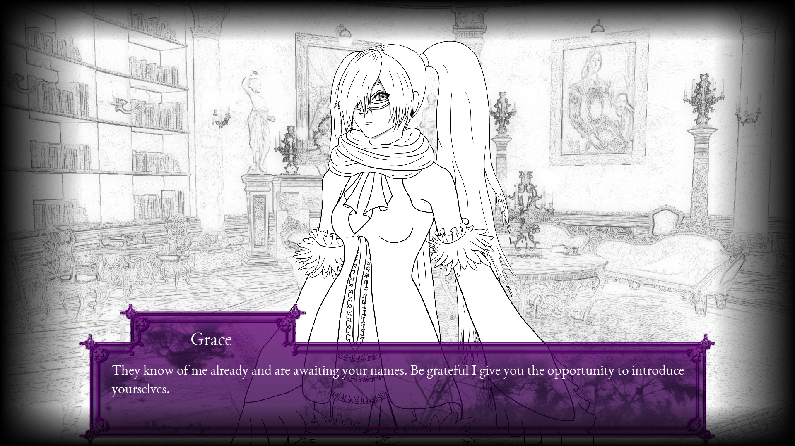

|
Michaelius A'Chapelo is a
Scandinavian game developer, musician and programmer. My private passion project, Purple Hybrid, has quietly been in development since December 2014. I was Lead Programmer at Oblongata Games on the Android title To Ashes, and my M.Sc. thesis, Annotation in Virtual Reality will be published as a scientific paper in 2021 for its novelty and contribution to the field of computer graphics. |
| |
Purple
Hybrid is a Gothic fantasy renaissance visual novel. |
 |
| E |
|
To
Ashes is a 2019 Android game available on
Google Play. |
| |
I worked as the Lead Programmer, supervising 4 other programmers in a team of 16 developers in total. Responsible for all technical aspects including the end product, I benchmarked the performance of visual technologies in Unity to ensure that phones could display the fiery graphics. I led the programmers in creating tools in Unity to enable our game designers unleash their creative visions for level design. |
| |
The
Sega Mega Drive (1989) was the first commercially successful
16-bit game console, and also the game console that Sonic the
Hedgehog made his debut on. |
|